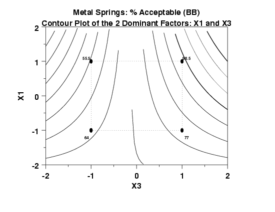

5.
Process Improvement
5.5.
Advanced topics
5.5.9.
An EDA approach to experimental design
5.5.9.10.
|
DOE contour plot
|
|
|
Purpose
|
The DOE contour plot answers the question:
Where else could we have run the experiment
to optimize the response?
Prior steps in this analysis have suggested the best setting
for each of the k factors. These best settings may have been
derived from
- Data: which of the n design points yielded the best
response, and what were the settings of that design point,
or from
- Averages: what setting of each factor yielded the best
response "on the average".
This 10th (and last) step in the analysis sequence goes beyond the
limitations of the n data points already chosen in the design
and replaces the data-limited question
"From among the n data points, what was the best setting?"
to a region-related question:
"In general, what should the settings have been
to optimize the response?"
|
|
Output
|
The outputs from the DOE contour plot are
- Primary: Best setting (X10,
X20, ..., Xk0) for each
of the k factors. This derived setting should yield
an optimal response.
- Secondary: Insight into the nature of the response surface and
the importance/unimportance of interactions.
|
|
Definition
|
A DOE contour plot is formed by
- Vertical Axis: The second most important factor in the
experiment.
- Horizontal Axis: The most important factor in the experiment.
More specifically, the DOE contour plot is constructed and
utilized via the following 7 steps:
- Axes
- Contour Curves
- Optimal Response Value
- Best Corner
- Steepest Ascent/Descent
- Optimal Curve
- Optimal Setting
with
- Axes: Choose the two most important factors in the
experiment as the two axes on the plot.
- Contour Curves: Based on the fitted
model and the best data settings for all of the remaining
factors, draw contour curves involving the two dominant
factors. This yields a graphical representation of the
response surface. The details for constructing linear
contour curves are given in
a later section.
- Optimal Value: Identify the theoretical value of the response
that constitutes "best." In particular, what value would we
like to have seen for the response?
- Best "Corner": The contour plot will have four "corners" for the
two most important factors Xi and
Xj: (Xi, Xj)
= (-, -), (-, +), (+, -), and (+, +). From the data, identify which
of these four corners yields the highest average response
\( \bar{Y} \).
- Steepest Ascent/Descent: From this optimum corner point, and
based on the nature of the contour lines near that corner,
step out in the direction of steepest ascent (if maximizing) or
steepest descent (if minimizing).
- Optimal Curve: Identify the curve on the contour plot that
corresponds to the ideal optimal value.
- Optimal Setting: Determine where the steepest ascent/descent
line intersects the optimum contour curve. This point
represents our "best guess" as to where we could have
run our experiment so as to obtain the desired optimal response.
|
|
Motivation
|
In addition to increasing insight, most experiments have a goal of
optimizing the response. That is, of determining a setting
(X10, X20, ...,
Xk0) for which the response is optimized.
The tool of choice to address this goal is the DOE contour plot. For
a pair of factors Xi and Xj, the
DOE contour plot is a 2-dimensional representation of the 3-dimensional
Y = f(Xi, Xj) response
surface. The position and spacing of the isocurves on the DOE contour
plot are an easily interpreted reflection of the nature of the surface.
In terms of the construction of the DOE contour plot,
there are three aspects of note:
- Pairs of Factors: A DOE contour plot necessarily has two axes
(only); hence only two out of the k factors can be
represented on this plot. All other factors must be set at a
fixed value (their optimum settings as determined by
the ordered data plot,
the DOE mean plot, and
the interaction effects matrix plot).
- Most Important Factor Pair: Many DOE contour plots are possible.
For an experiment with k factors, there are
\( \left( \begin{array}{c}
k \\ 2
\end{array} \right)
\frac{k!} {2!(k-2)!} = \frac{k(k-1)}{2}
\)
possible contour plots. For example, for k = 4 factors
there are 6 possible contour plots:
X1 and X2,
X1 and X3,
X1 and X4,
X2 and X3,
X2 and X4, and
X3 and X4.
In practice, we usually generate only one contour plot
involving the two most important factors.
- Main Effects Only:
The contour plot axes involve main effects only, not
interactions. The rationale for this is that the "deliverable"
for this step is k settings, a best setting for each
of the k factors. These k factors are real and
can be controlled, and so optimal settings can be used in
production. Interactions are of a different nature as
there is no "knob on the machine" by which an
interaction may be set to -, or to +. Hence the candidates for
the axes on contour plots are main effects only--no
interactions.
In summary, the motivation for the DOE contour plot is that it is an
easy-to-use graphic that provides insight as to the nature of the
response surface, and provides a specific answer to the question
"Where (else) should we have collected the data so to have optimized
the response?".
|
|
Plot for defective springs data
|
Applying the DOE contour plot for the defective springs data set
yields the following plot.

|
|
How to interpret
|
From the DOE contour plot for the defective springs data, we note the
following regarding the 7 framework issues:
|
|
Conclusions for the defective springs data
|
The application of the DOE contour plot to the defective springs
data set results in the following conclusions:
- Optimal settings for the "next" run:
Coded : (X1, X2, X3) = (+1.5, +1.0, +1.3)
Uncoded: (OT, CC, QT) = (1637.5, 0.7, 127.5)
- Nature of the response surface:
The X1*X3 interaction is important, hence the
effect of factor X1 will change depending on the
setting of factor X3.
|


{kind=link}